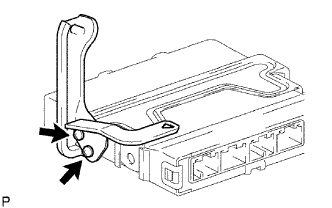

ECM > LẮP |
| 1. LẮP GIÁ BẮT ECM NO. 2 |
|  |
Lắp giá bắt bằng 2 vít.
| 2. LẮP GIÁ BẮT ECM NO. 1 |
 |
Lắp giá bắt bằng 2 vít.
| 3. LẮP ECM |
 |
Lắp ECM bằng bulông và 2 đai ốc.
Nối 4 giắc nối.
| 4. LẮP CỤM CỬA KHOANG ĐỰNG ĐỒ/GĂNG TAY |
 |
Cài 2 bản lề để lắp cửa ngăn đựng găng tay.
Trong khi ấn vào 2 bên của cửa ngắn đựng găng tay như được chỉ ra bới các mũi tên trong hình vẽ, đóng cửa để cài khớp nó vào 2 cái hãm.
| 5. NỐI CÁP VÀO CỰC ÂM ẮC QUY |
| 6. TIẾN HÀNH THIẾT LẬP BAN ĐẦU |
Tiến hành thiết lập ban đầu (Xem trang Kích chuột vào đây).